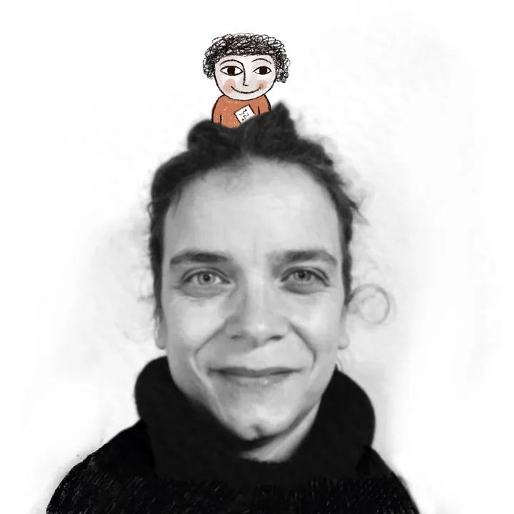
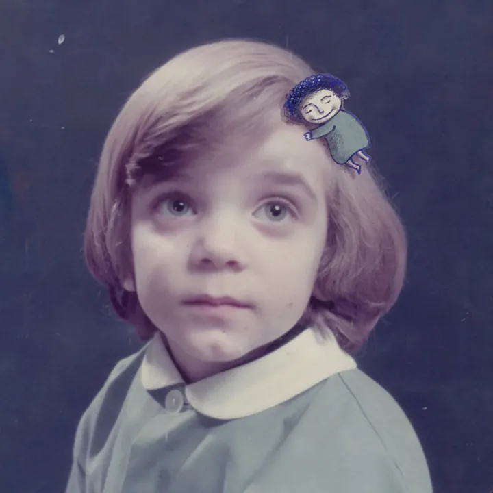
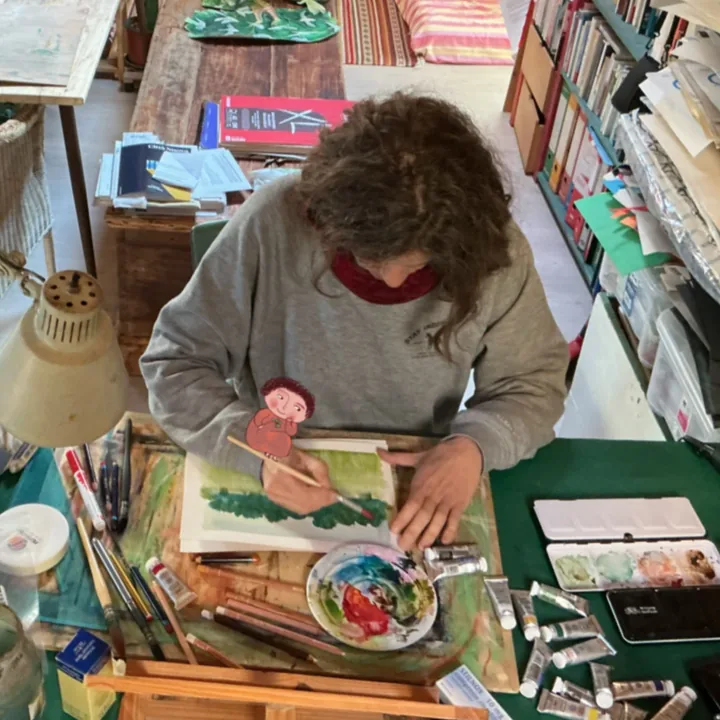

Progetto artistico Baruch
Baruch è un invito a guardare il mondo con occhi nuovi. Nasce da un desiderio di cura e di pace, come un piccolo custode che accompagna tra il visibile e l’immaginario.
È un progetto aperto, un contenitore di scoperte dove il disegno incontra la materia, la natura si fa trama e le mani danno forma a storie che ancora non esistono.
Baruch è il mio modo di benedire la curiosità e di trasformare ogni processo creativo in un sentiero da percorrere. Ma è anche il desiderio di collaborazioni costruttive, per mescolare esperienze e competenze differenti.


Caterina Santambrogio
Dietro gli occhi di Baruch ci sono i miei.
Mi chiamo Caterina e sono un’illustratrice che non ha mai smesso di esplorare la materia.
Il mio percorso inizia dalla passione per il disegno, che mi ha guidata attraverso gli studi artistici alla scoperta di una verità essenziale: un’immagine non è mai solo colore su carta, ma la narrazione profonda di un pensiero o di un’esperienza. È un modo per abitare la vita.
La mia ricerca si muove tra il rigore del disegno dettagliato e la freschezza dell’improvvisazione; spazia dall’immagine naturalistica a quella fiabesca, dalla bidimensionalità della carta alla forma tattile dell’argilla.
Quando non disegno, conduco laboratori dove invito gli altri a cercare la propria scintilla creativa, perché credo che questo contribuisca a farci sentire persone accese.
